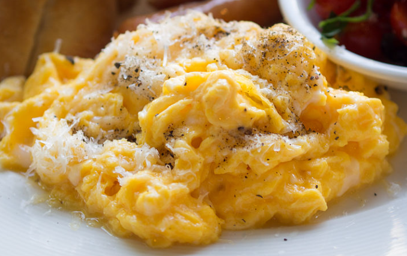

Meal Plan for College
| DAY |
MORNING |
NOON |
EVENING |
| MONDAY |
|
Berocca |
|
Tuna Sandwich |
|
Instant Noodles |
| TUESDAY |
|
Boiled Egg and Berocca |
|
Ham Sandwich |
|
Salpicao and Rice |
| WEDNESDAY |
|
Corned Beef and Berocca |
 |
Scrambled Eggs |
|
Salpicao and Rice |
| THURSDAY |
|
Toast and Berocca |
|
Pork Asado Bun |
|
Onigirii |
| FRIDAY |
|
Arozz Caldo |
|
Onigirii |
|
Chamomile Tea |
References:
Tired? Berocca is the energy boost that can help you stay focused for longer. (n.d.). Home. https://www.buyberocca.com/
Manalo, L. (2021). Ginisang corned beef. Kawaling Pinoy. https://www.kawalingpinoy.com/ginisang-corned-beef/
Rivers, A. (2023). Ultimate Tuna melt. The Recipe Critic. https://therecipecritic.com/tuna-melt/
Wikipedia contributors. (2023). Instant noodles. Wikipedia. https://en.wikipedia.org/wiki/Instant_noodles
Greaves, V. (2023). How to boil eggs perfectly every time. Allrecipes. https://www.allrecipes.com/article/how-to-boil-an-egg/
Wikipedia contributors. (2023a). Ham sandwich. Wikipedia. https://en.wikipedia.org/wiki/Ham_sandwich#
Wikipedia contributors. (2023b). Scrambled eggs. Wikipedia. https://en.wikipedia.org/wiki/Scrambled_eggs#
Merano, V. (2021, February 9). Beef Salpicao. panlasangpinoy.com. Retrieved October 2, 2023, from https://panlasangpinoy.com/easy-beef-salpicao-recipe/
Wikipedia contributors. (2023c). Toast (food). Wikipedia. https://en.wikipedia.org/wiki/Toast_(food)
Mella. (2021, November 29). Baked pork Buns (Asado bread Roll) - Riverten Kitchen. Riverten Kitchen. https://www.rivertenkitchen.com/baked-pork-buns-pandesal-asado.html
Wikipedia contributors. (2023a). Onigiri. Wikipedia. https://en.wikipedia.org/wiki/Onigiri#/media/File:Onigiri_002.jpg
Wikipedia contributors. (2023a). Onigiri. Wikipedia. https://en.wikipedia.org/wiki/Onigiri#/media/File:Onigiri_002.jpg
Manalo, L. (2023). Arroz caldo. Kawaling Pinoy. https://www.kawalingpinoy.com/arroz-caldo/
Rd, B. E. (2023, March 20). 5 Ways chamomile tea benefits your health. Healthline. https://www.healthline.com/nutrition/5-benefits-of-chamomile-tea#TOC_TITLE_HDR_2